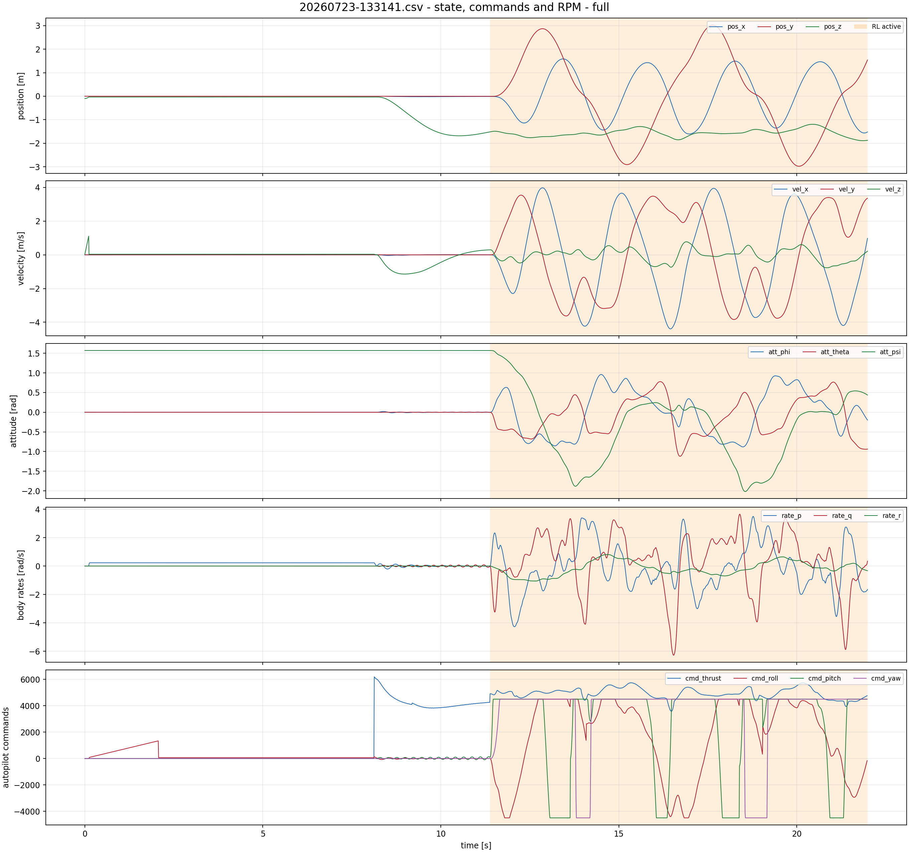
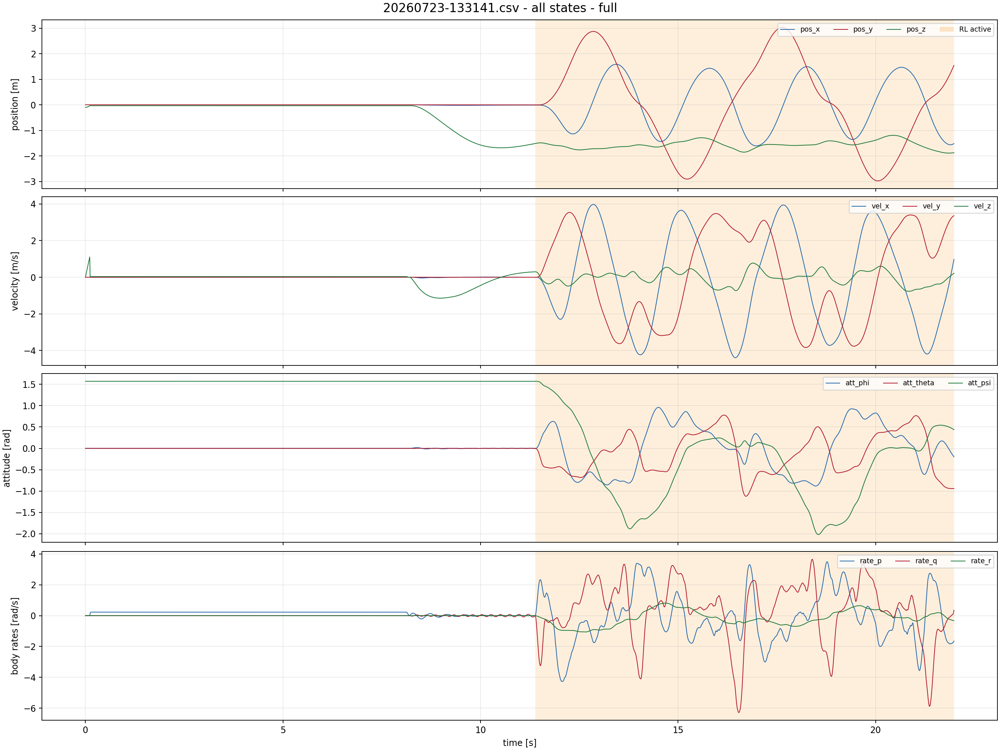
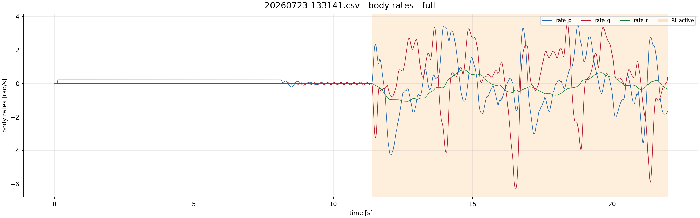
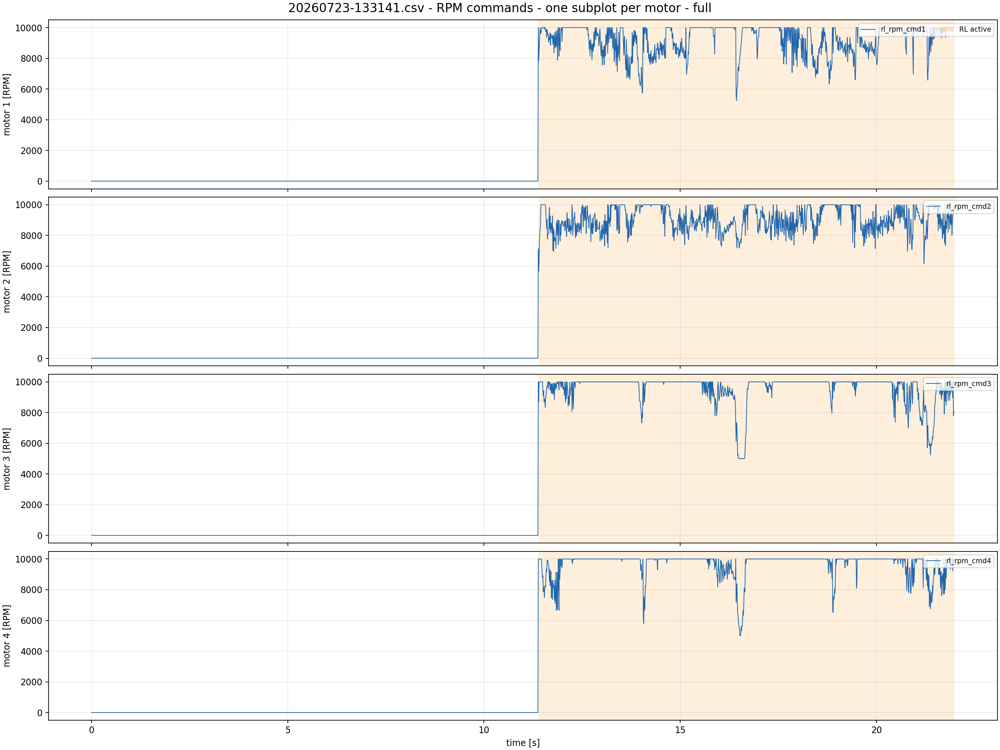
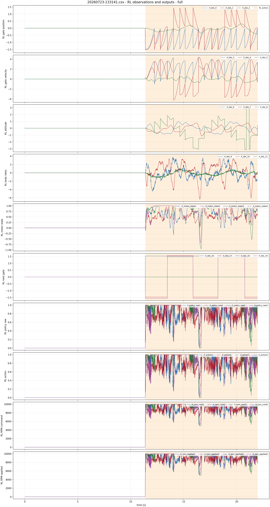
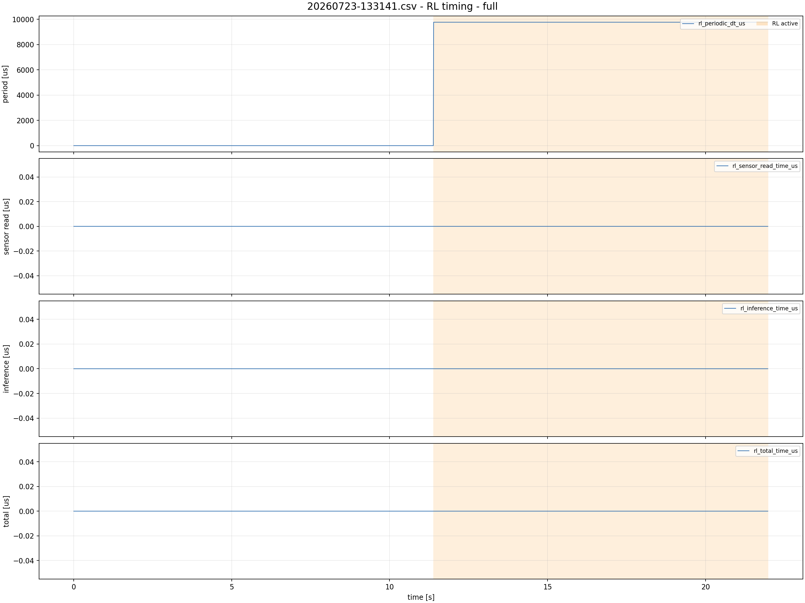

20260723-133141.csv
RL-active intervals: [(11.384004, 21.984453)]
state, commands and RPM - full

all states - full

body rates - full

RPM commands - one subplot per motor - full

RL observations and outputs - full

RL timing - full
